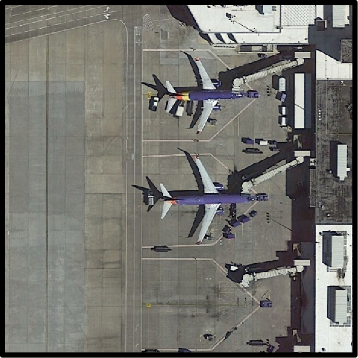

Data, baseline paper and code available
Train/validation data, reproducible baselines and available checkpoints will be released on Hugging Face.
↗ICASSP 2027 · GRAND CHALLENGE
A benchmark for natural, speech-driven interaction with Earth observation. Hear a place. Find it in the image.
01 / ABOUT

ImageSpoken audio is a fast, expressive and natural interface for geospatial artificial intelligence. In time-critical remote-sensing scenarios, people can describe a target without typing a detailed query.
RSAIU establishes a transparent benchmark for direct alignment between audio expressions and remote-sensing imagery. Unlike an ASR-to-text cascade, our tasks preserve emphasis, rhythm and speaking style.
02 / UPDATES
Train/validation data, reproducible baselines and available checkpoints will be released on Hugging Face.
↗Registration, hidden-label evaluation and the public leaderboard will open for participants.
↗Submission-format instructions will be published before the evaluation period.
↗03 / CHALLENGE
Explore fine-grained grounding and bidirectional retrieval between the spoken word and the overhead image.
Given an RS image and an audio referring expression, predict a pixel-level mask for the referred object or region.
Given an audio query or an RS image, retrieve its most semantically relevant counterpart from the opposite modality.
04 / DATASET
Built from RemoteSAM270K with diverse voices, accents, speaking styles, environmental noise and 500 newly collected human-recorded queries per track.
Audio expressions are generated from referring text with Qwen3-TTS and mixed with environmental sounds at sampled SNRs.
| Train | Val | Test | |
|---|---|---|---|
| Triplets | 9,459 | 1,576 | 2,077 |
| Avg. duration | 2.87s | 2.81s | — |
One-to-one pairs support bidirectional retrieval. Test queries include human speech separated by speaker and scene.
| Train | Val | Test | |
|---|---|---|---|
| Pairs | 21,612 | 3,602 | 4,105 |
| Avg. duration | 2.85s | 2.76s | — |
Test labels remain private and are used only by the official evaluation server. Training and validation labels will be available to registered participants.
05 / RESOURCES & SUBMISSION
Access the data, evaluation platform and challenge paper from one place.
06 / IMPORTANT DATES
Key releases and submission milestones for the challenge.
Hugging Face dataset and starter materials become available.
07 / ORGANIZATION
Researchers in remote sensing, computer vision, speech and affective computing.
Hohai University
Hohai University
Southeast University
Griffith University
Curtin University
Tongji University
Hohai University
Hohai University